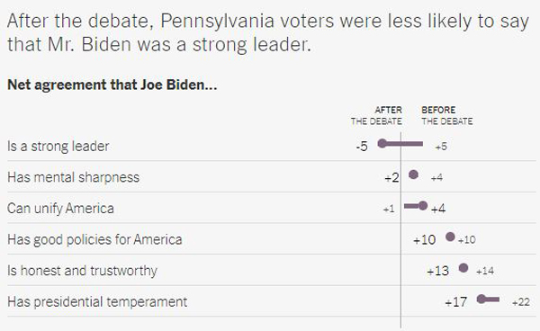

By Nate Chon
By Nate Chon
Published Oct 3, 2020 Updated Oct 5, 2020 1:07 p.m. ET
|
2016 Election Result |
NYT/Siena Oct. 2020 |
|
|---|---|---|
| Pennsylvania (n=706) | <1 Trump | +7 Biden 49-42 |
| Florida (710) | +1 Trump | +5 Biden 47-42 |
By overwhelming margins, voters in Pennsylvania and Florida were repelled by President Trump’s conduct in the first general election debate, according to New York Times/Siena College surveys, as Joseph R. Biden Jr. maintained a lead in the two largest battleground states.
Over all, Mr. Biden led by seven percentage points, 49 percent to 42 percent, among likely voters in Pennsylvania. He led by a similar margin, 47-42, among likely voters in Florida.
The surveys began Wednesday, before the early Friday announcement that President Trump had contracted the coronavirus. There was modest evidence of a shift in favor of Mr. Biden in interviews on Friday, including in Arizona where a Times/Siena survey is in progress, after controlling for the demographic and political characteristics of the respondents.
One day of interviews is not enough to evaluate the consequences of a major political development, and it may be several days or longer before even the initial effects of Mr. Trump’s diagnosis can be ascertained by pollsters.
The debates long loomed as one of the president’s best opportunities to reshape the race in his favor. He has trailed in Pennsylvania and Florida from the outset of the campaign, and he does not have many credible paths to the presidency without winning at least one of the two — and probably both.
Instead, a mere 21 percent of likely voters across the two pivotal states said Mr. Trump won the debate Tuesday. It leaves the president at a significant and even daunting disadvantage with a month until Election Day.
In follow-up interviews with half a dozen mainly Republican respondents, none said the president’s coronavirus diagnosis was affecting their voting decision. But some said the debate did affect the way they were thinking about the election, with all but one using the word “bully” to describe the president.
Voters disapproved of the president’s conduct in the debate by a margin of 65 percent to 25 percent. More than half of voters said they strongly disapproved of his conduct.
“I think that Donald Trump acted like a big bully on the stage,” said Cindy Von Waldner, 63, a lifelong Republican from Titusville, Fla. The president began to lose her support when the pandemic hit, and she said she did not believe he took it seriously enough or was transparent enough with the American people. She said she would most likely vote for Mr. Biden, her first time casting a Democratic ballot.
The revulsion against Mr. Trump’s performance extended well into his reliable base. One-third of the president’s supporters said they disapproved of his performance, including 11 percent who did so strongly. A modest but potentially significant 8 percent of people who backed him in the survey said the debate made them less likely to support Mr. Trump’s candidacy.
The debate didn’t change the mind of Peralte Roseme, a 35-year-old independent in West Palm Beach, Fla, who voted for President Obama and now plans to vote for Mr. Trump. Mr. Roseme, who is Black, said it felt “horrible” that Mr. Trump refused to directly condemn white supremacists and told one far-right group to “stand by,” but he supported Mr. Trump in the survey.
“I don’t think he’s racist or anything like that,” he said of Mr. Trump. Instead, he said he thought Mr. Trump was thinking: “I just don’t want to lose votes. These are people in my corner; why would I put them down?”
In a direct comparison with a Times/Siena survey of Pennsylvania conducted before the debate, the president’s personal ratings slumped across the board. The share of voters who thought Mr. Trump had the temperament and personality to be president dropped by more than a net 10 percentage points.
The president and his allies had long argued that Mr. Biden would disqualify himself with a poor performance in the debates, creating an opening for the president to reassemble his winning coalition. But Pennsylvania voters were about as likely to say Mr. Biden had the mental sharpness to serve effectively as president as they were before the debate. More voters said Mr. Trump didn’t have the mental sharpness it takes than said the same of Mr. Biden.
While Mr. Trump failed to capitalize on a rare opportunity to claw back into the race, the findings suggest that the debate did not shift the contest decisively in Mr. Biden’s direction, either. The results were close to the average of pre-debate surveys in both states, another reflection of the unusually stable polling results ahead of the election. In Pennsylvania, the race was even somewhat closer than it was in a Times/Siena poll conducted before the debate, which found Mr. Biden ahead by nine percentage points.
The lack of additional gains by Mr. Biden after the first debate might have been all but inevitable in a deeply polarized country. But it might also suggest that Mr. Biden, like the president, failed to capitalize on opportunities of his own.
Over all, voters split roughly evenly between whether the debate made them more or less likely to support Mr. Biden, or whether the debate made no difference at all. While most voters approved of the way he handled himself during the debate, his personal ratings nonetheless held steady or even declined compared with the survey taken before the debate in Pennsylvania.
After the debate, Pennsylvania voters were less likely to say that Mr. Biden was a strong leader, perhaps reflecting that the president tended to dominate the discussion — even if it was often to his disadvantage. Voters were also somewhat less likely to say Mr. Biden had the temperament to be an effective president.
Only 37 percent of likely voters thought Mr. Biden won the debate, with an even larger number — 42 percent — refusing to confer victory on either candidate.
Carl Notarianni, a 59-year-old retired UPS worker, called Mr. Biden’s performance “terrible,” partly because he wouldn’t answer the question about whether he planned to add Supreme Court justices. He’s a Democrat who has grown disillusioned with the party and supports President Trump.
Voters said they supported the nomination of Amy Coney Barrett to the Supreme Court by a margin of 44 percent to 34 percent across the two states in the first Times/Siena surveys conducted entirely after her nomination. But voters continued to trust Mr. Biden over the president to select the next Supreme Court justice.
The polls found that voters in Florida and Pennsylvania remained deeply divided along the familiar demographic lines of the Trump era, with the president leading among white voters without a college degree and Mr. Biden countering with a significant lead among nonwhite voters and white four-year college graduates.
Mr. Biden led among voters 65 and older in both states, continuing one of the more surprising electoral shifts of this election cycle in two of the oldest states in the country.
In Pennsylvania, Mr. Trump faces a large deficit among white college-educated voters, who back Mr. Biden, 59 percent to 31 percent. Mr. Biden held a similar 60-32 percent lead in the suburbs of Philadelphia, doubling Hillary Clinton’s margin of victory in the region four years ago.
Mr. Trump nonetheless remained at the edge of competitiveness in Pennsylvania, thanks to a significant lead among white voters without a college degree. Over all, Mr. Trump led Mr. Biden, 58 percent to 34 percent, among white voters without a degree, who represent around half of likely voters in the state.
Surveys have tended to suggest a closer race in Florida, with pollsters showing Mr. Trump with surprising strength among Hispanic and particularly Cuban-American voters. The Times/Siena poll found no signs of any significant gains by Mr. Trump among the state’s Hispanic voters, however, with Mr. Biden leading among that group, 58-34. In Miami-Dade County over all, Mr. Biden leads, 61-30. In both cases, the results are comparable to or better than Hillary Clinton’s margin four years ago, though the estimates for smaller subgroups carry a considerable margin of sampling error. Mr. Biden narrowly led an even smaller sample of less than 50 Cuban-American voters, who were registered as Republicans by nearly a two-to-one margin.
The margin of error due to sampling on the full survey was plus or minus 4.2 percentage points in Florida, and 4.1 percentage points in Pennsylvania.
Here are the crosstabs and methodology for the poll.